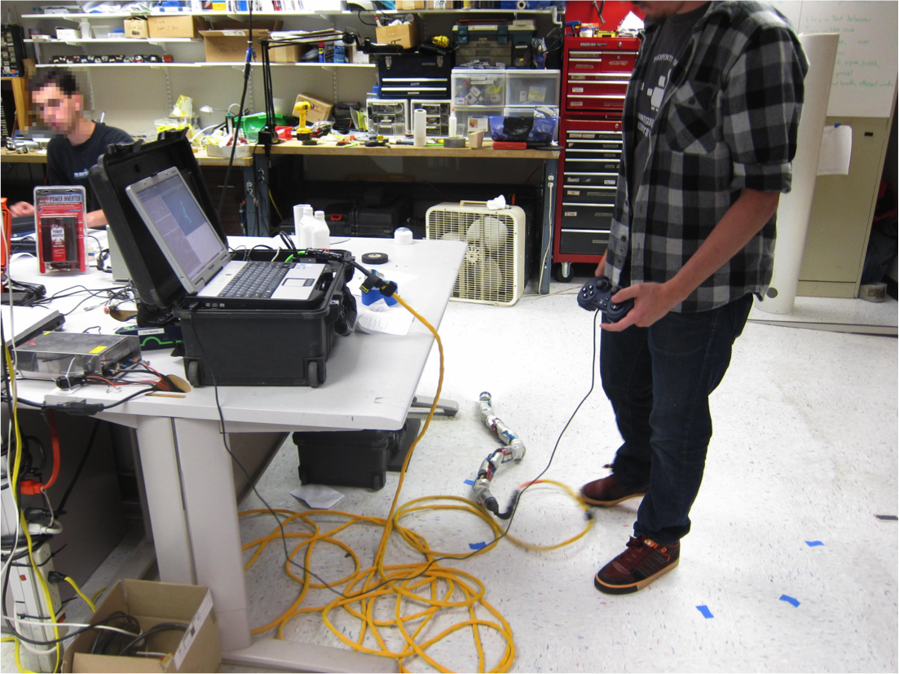
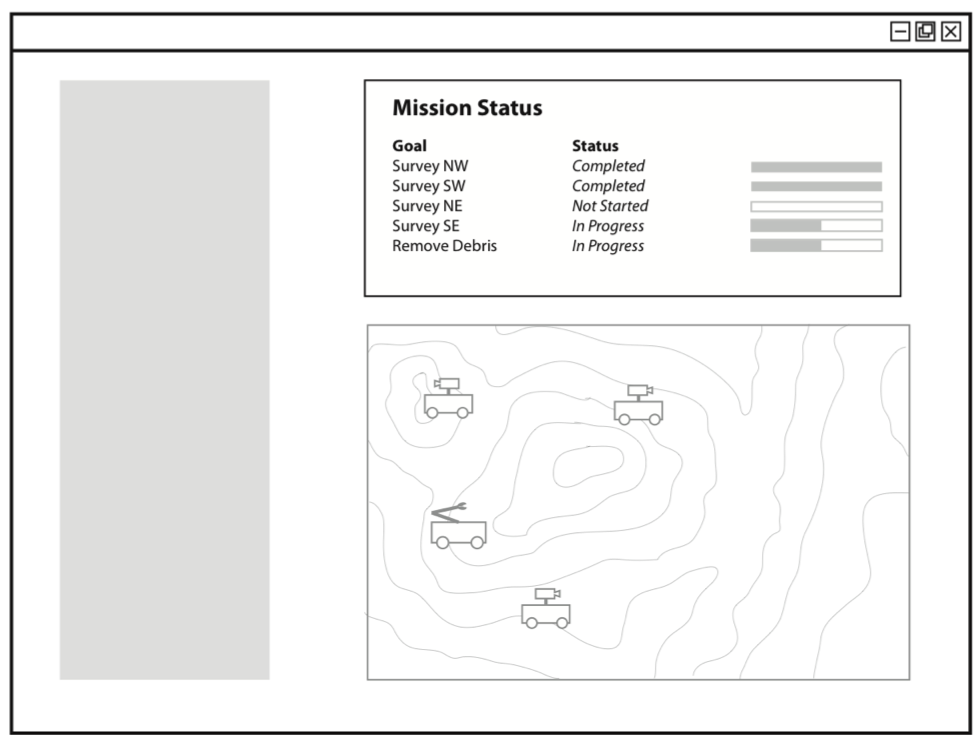

MURS
What do expert robot operators want to see in an interface?
Background
Human-robot interaction is becoming more complex as systems are beginning to involve multiple robots, multiple operators, or both. These systems are highly complex in regards to team coordination, task delegation, and situation awareness. I worked with a team of Human-Computer Interaction Masters students at Carnegie Mellon University to study how interface design may aid situation awareness in Multi-User multi-Robot Systems (MURS).
Process
- Literature Review - We conducted an extensive literature review of robotics, robot team, and human factors research. This review provided guiding principles for the remainder of our research. Contextual Inquiry - We conducted contextual inquiries with two groups of robot operators. We evaluated team coordination, use of their current control interface, and completion of various tasks with their robot.
- Affinity Diagramming - We created affinity diagrams of our contextual inquiry data and distilled twelve basic questions that robot operators or robots must answer to remain aware of their situation and subsequently for successful coordination to occur. Another important model developed at this stage listed seven possible saliencies information may be displayed with in an interface. (At this stage the other students ceased to work on the project to focus on completion of their Masters program, and I completed the project with my advising professor)
- Interface Mock-up - Using ten of the situation awareness questions and three of the information saliency, I created thirty interface mock-ups representing potential systems which could provide answers to the situation awareness questions at varying levels of display salience.
- Speed Dating - I carried out speed dating sessions with two different robot operators in order to evaluate which aspects of situation awareness were critical, and which levels of information saliency were desired. To ground these sessions, two scenarios of health-care and search-and rescue robot teams were presented for the operators to consider. Operators were then asked to use these scenarios in evaluating which display salience level would best support answering each of the ten situation awareness questions.
Results
- Operators want information to be displayed with varying levels of saliency.
- There is a trade-off between system autonomy and operator control.
- High saliency should be reserved for information relating to human safety, robot safety, items needing immediate attention or changing system goals.
- Medium saliency should be used for information relating to context and goals.
- Low saliency should be used for information directed at operators controlling the mission who need fine control.
- A full paper describing this project in further detail was accepted to the 2012 International Conference on Human-Robot Interaction.
Images

Contextual Inquiry

Sample Interface Element